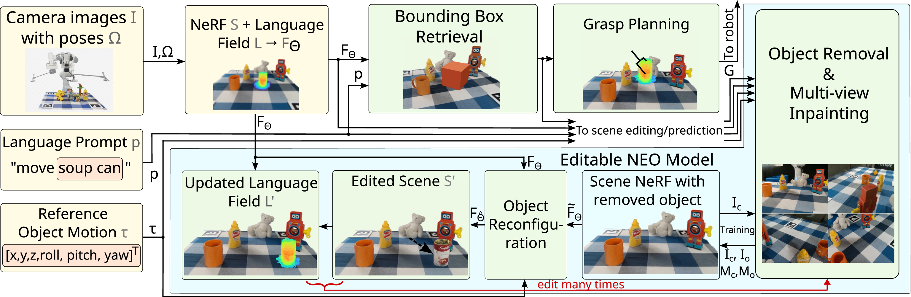
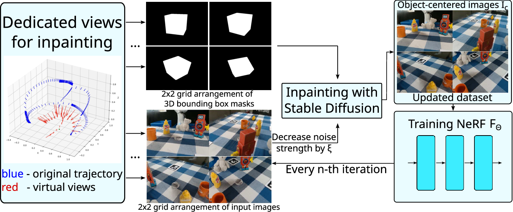
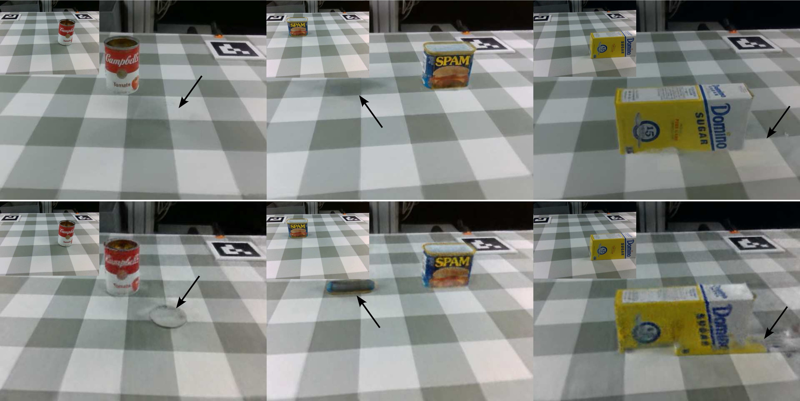
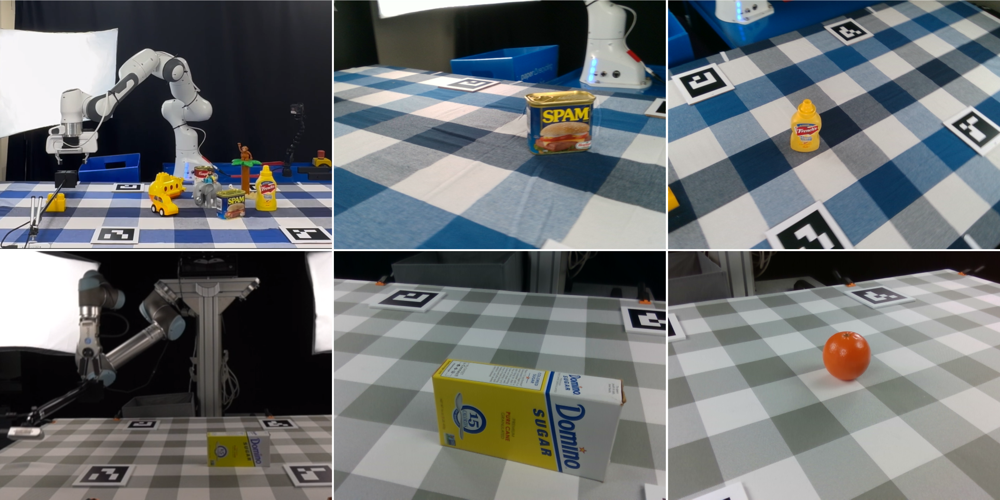

Dataset capture
Scene Recording
Automated camera motion records registered multiview observations for capturing scenes in the NEO-Dataset.
About the work
NEO is a unified framework for language-guided NeRF editing in robotic manipulation. Given a prompt and a planned object motion, NEO removes the target object, reconstructs newly revealed regions with multiview-consistent progressive inpainting, and reinserts the object through direct NeRF weight editing with teacher-student knowledge distillation.
The resulting representation remains persistent across consecutive edits, enabling a robot to anticipate scene changes before execution. The paper also introduces the NEO-Dataset, a benchmark of registered tabletop scenes captured before and after object manipulation for quantitative evaluation of NeRF scene editing methods.
Method video
See how NEO localizes, removes, reconstructs, and repositions objects while keeping a persistent neural representation of the scene.
How it works
One editable representation carries the scene through a sequence of language-guided manipulation steps.

NEO builds an initial NeRF and language field from camera images, localizes the prompted object, then updates the scene before motion execution. The system combines object removal, multi-view inpainting, and object reconfiguration modules so the edited neural field can be reused for the next manipulation.
Progressive inpainting reconstructs surfaces that were hidden by removed objects while maintaining cross-view consistency for NeRF training.

Teacher-student distillation composes the edited and original fields so moved objects are preserved directly in the updated representation.

Benchmark
The NEO-Dataset contains twelve registered tabletop scenes captured before and after object removal or manipulation. Scenes are recorded with fixed robot arms and camera trajectories, then aligned with ArUco markers so rendered edited views can be compared against real post-manipulation images.
The dataset is collected in two different setups utilizing two different manipulators: the Franka Emika Panda and UR5. These provide background variability across scenes in addition to scene content variation.
Scenes are scanned in an automated manner with controlled camera motion along a fixed trajectory to ensure little-to-no variation in scene coverage. The camera poses from this process provide broad scan coverage for training and evaluating edited scene renderings.

Experiments
Short demonstrations of the capture, interaction, and manipulation stages used with NEO.
Automated camera motion records registered multiview observations for capturing scenes in the NEO-Dataset.
Language guidance identifies and localizes the target object within the neural scene.
A complete robot sequence demonstrates persistent scene editing across consecutive actions.
Citation
@article{zielinski2026neo,
author={Zielinski, Mikolaj and Hall, David and Belter, Dominik and Moghadam, Peyman},
journal={IEEE Robotics and Automation Letters},
title={NEO: NeRF It Once, Edit It Many Times for Continuous Object Manipulation},
year={2026},
volume={11},
number={9},
pages={10736 - 10743},
}